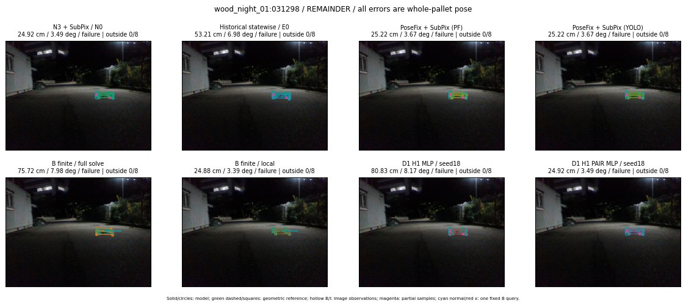

Whole-pallet pose errors; reference is a fixed geometric annotation, not certified physical GT.

Scores are uncalibrated logits. N0 retention is a numerical pose alias; it differs from H0 none or B fallback. B/I and profiles in baseline/B panels are original observations; L panels use new D1 observations. Only one deterministic supported B query is shown in a thumbnail; full support counts are below. Grey privacy rectangles edit the display copy only and are unrelated to O states; all observations were measured on original pixels. Thumbnails use JPEG quality85; detailed scientific panels are PNG.
| Method | Whole pose / cm, deg | Actual source | Selected ID | Score | Archived candidates | Eligible | N0 retained | H0 none | Fallback | Finite profiles |
|---|---|---|---|---|---|---|---|---|---|---|
| Raw YOLO + F | 128.15 cm / 87.42 deg / failure | OTHER | None | N/A | N/A | N/A | False | N/A | None | N/A |
| N3 + SubPix / N0 | 24.92 cm / 3.49 deg / failure | N0 | None | N/A | N/A | N/A | True | N/A | None | N/A |
| Historical statewise / E0 | 53.21 cm / 6.98 deg / failure | E0_REGENERATED | None | N/A | N/A | N/A | False | N/A | False | N/A |
| PoseFix raw | 28.88 cm / 3.53 deg / failure | OTHER | None | N/A | N/A | N/A | False | N/A | None | N/A |
| PoseFix + SubPix (PF) | 25.22 cm / 3.67 deg / failure | OTHER | None | N/A | N/A | N/A | False | N/A | False | historical support records 9; finite audit N/A |
| PoseFix + SubPix (YOLO) | 25.22 cm / 3.67 deg / failure | OTHER | None | N/A | N/A | N/A | False | N/A | False | historical support records 9; finite audit N/A |
| Historical L, seed18 | 24.92 cm / 3.49 deg / failure | N0 | N0 | N/A | 55 | 55 | True | True | True | N/A |
| Historical B fixed bank | 94.76 cm / 83.01 deg / failure | OTHER | G10/SWAPPED_WD/sample/1 | N/A | N/A | N/A | False | N/A | False | N/A |
| Historical B full | 103.28 cm / 83.46 deg / failure | OTHER | NEW/B/SWAPPED_WD/h0/G13/SWAPPED_WD/sample/0/PROPOSED_NATIVE_YAW_0 | N/A | N/A | N/A | False | N/A | False | N/A |
| Historical edge full | 1430.79 cm / 84.48 deg / failure | OTHER | NEW/edge/SWAPPED_WD/h3/G10/ORIGINAL_WD/sample/0/PROPOSED_NATIVE_YAW_3 | N/A | N/A | N/A | False | N/A | False | N/A |
| Historical AB full | 74.35 cm / 8.33 deg / failure | OTHER | NEW/AB/ORIGINAL_WD/h0/G13/ORIGINAL_WD/sample/0/PROPOSED_NATIVE_YAW_0 | N/A | N/A | N/A | False | N/A | False | N/A |
| B finite / fixed bank | 80.83 cm / 8.17 deg / failure | OTHER | G10/ORIGINAL_WD/sample/1 | N/A | N/A | N/A | False | N/A | False | 6/6 |
| B finite / full solve | 75.72 cm / 7.98 deg / failure | OTHER | NEW_FINITE/B/ORIGINAL_WD/h0/G13/ORIGINAL_WD/sample/0/PROPOSED_NATIVE_YAW_0 | N/A | N/A | N/A | False | N/A | False | 6/6 |
| B finite / local | 24.88 cm / 3.39 deg / failure | OTHER | NEW_FINITE/B/ORIGINAL_WD/h0/N0_LOCAL_SAME_PHYSICAL_POSE/ORIGINAL_WD | N/A | N/A | N/A | False | N/A | False | 6/6 |
| Edge finite / full solve | 80.83 cm / 8.17 deg / failure | OTHER | G10/ORIGINAL_WD/sample/1 | N/A | N/A | N/A | False | N/A | False | 6/6 |
| D0 H0 MLP / seed18 | 24.92 cm / 3.49 deg / failure | N0 | N0 | 0.9790587425231934 | 29 | 29 | True | True | True | N/A |
| D0 H0 MLP / seed19 | 24.92 cm / 3.49 deg / failure | N0 | N0 | 1.365824580192566 | 29 | 29 | True | True | True | N/A |
| D0 H0 MLP / seed20 | 24.92 cm / 3.49 deg / failure | N0 | N0 | -0.814044713973999 | 29 | 29 | True | True | True | N/A |
| D0 H1 MLP / seed18 | 114.11 cm / 84.07 deg / failure | OTHER | G13/SWAPPED_WD/selected | -4.729556560516357 | 29 | 29 | False | False | False | N/A |
| D0 H1 MLP / seed19 | 114.11 cm / 84.07 deg / failure | OTHER | G13/SWAPPED_WD/selected | -3.5342628955841064 | 29 | 29 | False | False | False | N/A |
| D0 H1 MLP / seed20 | 114.11 cm / 84.07 deg / failure | OTHER | G13/SWAPPED_WD/selected | -5.2478861808776855 | 29 | 29 | False | False | False | N/A |
| D1 H0 MLP / seed18 | 24.92 cm / 3.49 deg / failure | N0 | N0 | 5.135447978973389 | 29 | 29 | True | True | True | N/A |
| D1 H0 MLP / seed19 | 24.92 cm / 3.49 deg / failure | N0 | N0 | 5.343637466430664 | 29 | 29 | True | True | True | N/A |
| D1 H0 MLP / seed20 | 24.92 cm / 3.49 deg / failure | N0 | N0 | 4.940948963165283 | 29 | 29 | True | True | True | N/A |
| D1 H1 MLP / seed18 | 80.83 cm / 8.17 deg / failure | OTHER | WD0/ORIGINAL_WD/selected | -1.9395159482955933 | 29 | 29 | False | False | False | N/A |
| D1 H1 MLP / seed19 | 80.83 cm / 8.17 deg / failure | OTHER | WD0/ORIGINAL_WD/selected | -2.1377246379852295 | 29 | 29 | False | False | False | N/A |
| D1 H1 MLP / seed20 | 80.83 cm / 8.17 deg / failure | OTHER | WD0/ORIGINAL_WD/selected | -1.8182713985443115 | 29 | 29 | False | False | False | N/A |
| D1 H1 ROLE AFFINE / seed18 | 24.92 cm / 3.49 deg / failure | N0 | N0 | -0.3062056303024292 | 29 | 29 | True | False | False | N/A |
| D1 H1 ROLE AFFINE / seed19 | 24.92 cm / 3.49 deg / failure | N0 | N0 | -0.40386268496513367 | 29 | 29 | True | False | False | N/A |
| D1 H1 ROLE AFFINE / seed20 | 24.92 cm / 3.49 deg / failure | N0 | N0 | -0.20765210688114166 | 29 | 29 | True | False | False | N/A |
| D1 H1 PAIR MLP / seed18 | 24.92 cm / 3.49 deg / failure | N0 | N0 | -2.0799942016601562 | 29 | 2 | True | False | False | N/A |
| D1 H1 PAIR MLP / seed19 | 24.92 cm / 3.49 deg / failure | N0 | N0 | -1.7458438873291016 | 29 | 2 | True | False | False | N/A |
| D1 H1 PAIR MLP / seed20 | 24.92 cm / 3.49 deg / failure | N0 | N0 | -1.9353957176208496 | 29 | 2 | True | False | False | N/A |
| D1 H1 PAIR ROLE AFFINE / seed18 | 24.92 cm / 3.49 deg / failure | N0 | N0 | -0.8056913614273071 | 29 | 2 | True | False | False | N/A |
| D1 H1 PAIR ROLE AFFINE / seed19 | 24.92 cm / 3.49 deg / failure | N0 | N0 | -0.987483561038971 | 29 | 2 | True | False | False | N/A |
| D1 H1 PAIR ROLE AFFINE / seed20 | 24.92 cm / 3.49 deg / failure | N0 | N0 | -0.9672936797142029 | 29 | 2 | True | False | False | N/A |
| Regenerated common E0 | 53.21 cm / 6.98 deg / failure | E0_REGENERATED | E0_REGENERATED | N/A | N/A | N/A | False | N/A | False | N/A |